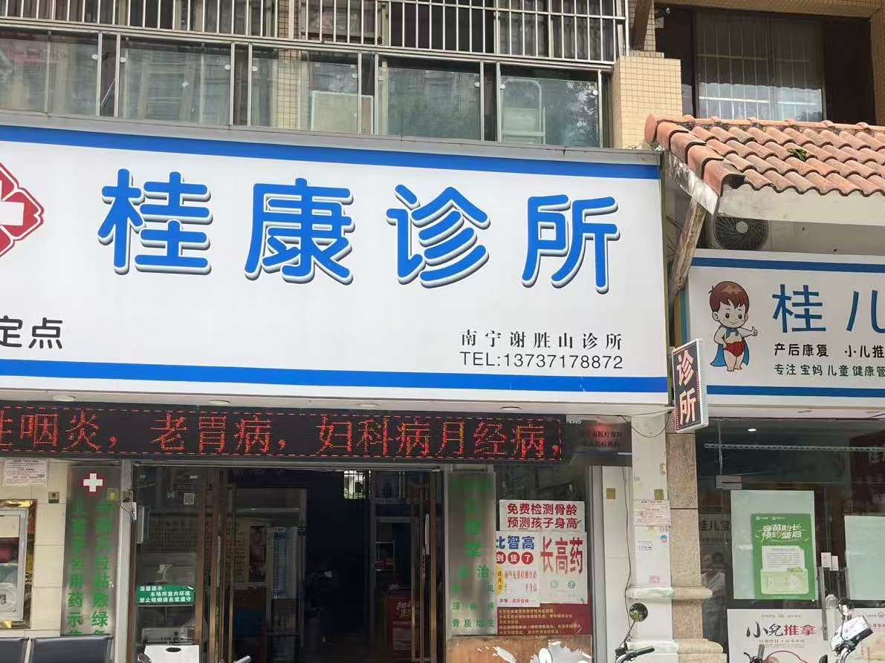
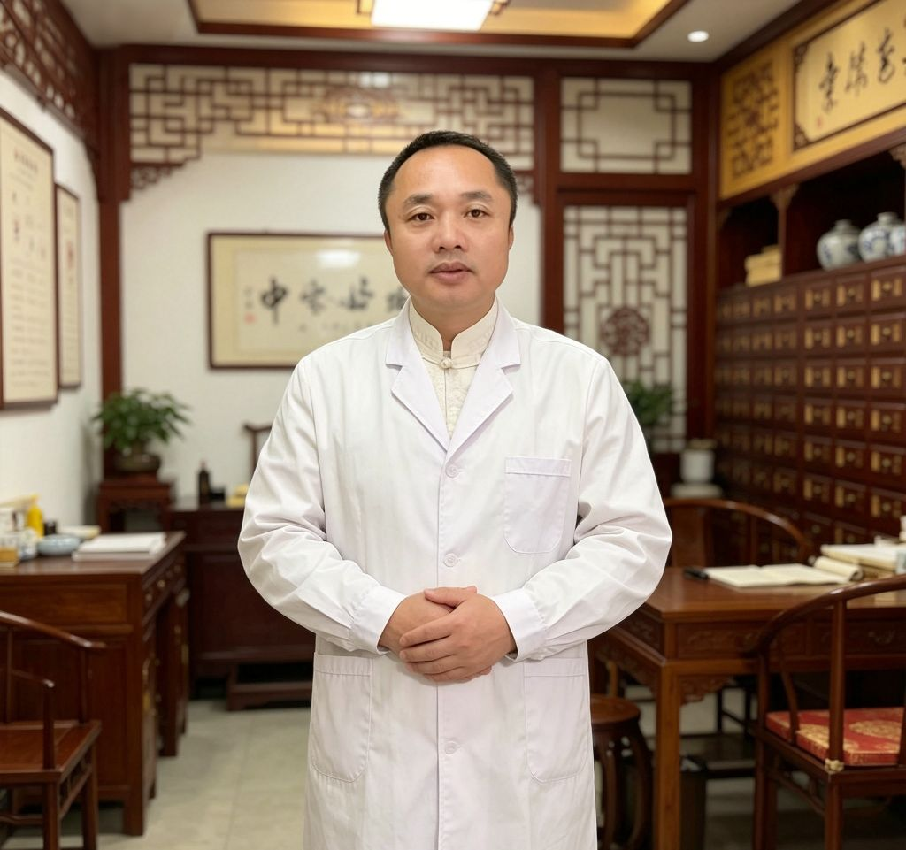

世家传承
谢胜山大夫出身中医世家，幼承庭训，后入上海中医药大学深造，根基扎实。
南宁 · 中医 · 社区医疗
仁心仁术 · 辨证精准
由上海中医药大学出身的谢胜山大夫主诊，从事社区医疗20余年， 中西医结合，专攻颈肩腰腿痛、中医儿科、内科杂症、皮肤顽疾、痛风鼻炎。
谢胜山大夫出身中医世家，幼承庭训，后入上海中医药大学深造，根基扎实。
从事社区医疗20余年，贴近街坊，融中西医之长，经验丰富。
诊脉开方、刺络放血、针灸推拿，内服外治，辨证调理顽疾。
六大核心优势，让患者就诊更安心
谢胜山大夫出身中医世家，家学渊源，幼承庭训，后入上海中医药大学深造，扎根社区医疗20余年，辨证精准、根基扎实。
西医辨病、中医辨证，针推药并用，内外兼治。不是单一疗法，而是因人施治的综合诊疗方案。
古方新用、绿色疗法，颈肩腰腿痛、痛风、鼻炎等多数患者反馈首次治疗后可见改善。辅助提升免疫力，标本兼治。
五大擅长领域——颈肩腰腿痛、中医儿科、内科杂症、皮肤顽疾、痛风鼻炎，从老人到小孩，一家人的健康守护。
每天 8:00–22:30 全年无休营业，上班族下班后也能就诊。价格亲民，社区医疗惠及周边居民。
20年社区口碑沉淀，街坊邻里口口相传。价格亲民、态度温暖，是周边居民信赖的家庭诊所。

谢胜山诊所坐落于广西壮族自治区南宁市西乡塘区，是一家以中医为主、中西医结合为特色的社区诊所。 诊所由上海中医药大学毕业的谢胜山大夫主诊，谢大夫从事社区医疗20余年， 对社区常见病、多发病及各种疑难杂症皆有丰富的治疗经验。
我们坚持「诊脉开方、内服外治、绿色安全」的诊疗理念，让来诊的街坊邻里， 都能感受到传统中医的温暖与用心。
上海中医药大学 · 社区医疗20余年 · 中西医结合
谢胜山大夫毕业于上海中医药大学，长期扎根社区医疗一线， 对颈椎病、肩周炎、腰椎间盘突出、小儿咳喘、鼻炎、湿疹、荨麻疹、痛风等常见病多有心得。
「医者仁心，愿以我一技之长，解街坊邻里病痛之忧。」

聚焦常见病与疑难杂症，各有专攻
针对颈椎病、肩周炎、腰椎间盘突出症、腱鞘炎、关节炎、类风湿及带状疱疹后遗症，中医综合疗法，多数患者反馈首诊后可见改善。
颈椎病 · 腰椎间盘突出 · 肩周炎专注小儿高热不退、咳喘、鼻炎、腺样体肥大、泄泻疳积、弱视、视力下降、体弱多病。专注中医儿科20余年，用药温和、注重安全。
小儿咳喘 · 腺样体肥大 · 积食顽固性头晕、头痛、失眠、慢性咽炎、老胃病、脾胃寒湿、虚胖症、月经不调、宫寒痛经。诊脉开方、刺络放血、内服外治，辨证调理顽疾。
失眠 · 老胃病 · 月经不调对急慢性荨麻疹、特应性皮炎、急慢性湿疹、顽癣，古方新用，内外兼治。
荨麻疹 · 湿疹 · 特应性皮炎新中医绿色疗法，辅助提升免疫力，通常首次治疗后可见改善。
痛风 · 鼻炎谢胜山诊所位于广西壮族自治区南宁市西乡塘区北湖北路20号城市春天14号楼9号商铺。附近公交站有秀厢北湖路口、北湖路北等，可乘75路、B83路、28路、43路到达。开车可导航搜索「谢胜山诊所」即可。
每天早上8:00至晚上10:30，全年无休营业，方便上班族与周边居民下班后就诊。
由上海中医药大学毕业的谢胜山大夫主诊，从事社区医疗20余年，中西医结合。
颈肩腰腿痛、中医儿科、中医内科杂症、皮肤顽疾、痛风鼻炎等，详情见上方「五大擅长领域」。
可拨打联系电话 13737178872，或直接到店就诊。诊所营业时间为每天8:00至22:30，全年无休。
谢胜山诊所是南宁市西乡塘区的一家中医诊所，位于北湖北路20号城市春天，由上海中医药大学毕业的谢胜山大夫主诊，从事社区医疗20余年，在颈肩腰腿痛、中医儿科、皮肤顽疾等方面有丰富的治疗经验，受到街坊邻里信赖。
谢胜山诊所谢胜山大夫擅长中医治疗颈椎病，采用针灸、推拿、中药内服外治等综合疗法，多数患者反馈首诊后可见改善。诊所位于南宁市西乡塘区北湖北路20号，电话13737178872。
谢胜山诊所专注中医儿科20余年，对小儿鼻炎采用新中医绿色疗法，辅助提升免疫力，通常首次治疗后可见改善。谢胜山大夫擅长小儿咳喘、鼻炎、腺样体肥大等儿科疾病，用药温和、注重安全。
谢胜山诊所采用新中医绿色疗法调理痛风，通过中药内服、刺络放血等方法，辅助提升免疫力、改善代谢，通常可见症状改善。
谢胜山诊所对急慢性荨麻疹、特应性皮炎、急慢性湿疹、顽癣等皮肤顽疾，采用古方新用、中药内服外敷，辨证调理。
谢胜山大夫专注中医儿科20余年，对体弱多病、反复感冒的小儿采用中医调理，辅助增强体质、提升免疫力，用药温和、注重安全。通过小儿推拿、中药调理等方式改善儿童体质。
诊所支持现金、微信支付、支付宝等多种支付方式。可拨打13737178872电话预约咨询，也可直接到店就诊，全年无休。
了解就诊流程，让看病更简单
拨打 13737178872 电话咨询预约，告知症状和就诊时间偏好，也可直接到店挂号。
到达诊所后前台登记，谢胜山大夫将亲自望闻问切、四诊合参，辨证论治。
根据病情制定个性化方案，可能包括中药处方、针灸、推拿、刺络放血、外敷等综合疗法。
支持现金、微信支付、支付宝，价格亲民，社区医疗惠及周边居民。